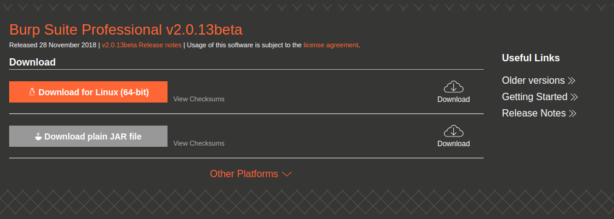

Requirement
먼저 JDK가 설치되어 있어야 한다. jdk11 설치방법을 참고하여 JDK를 설치한다.
Install Burp Suite v2.0
공식 홈페이지 에서 burpsuite installer를 다운로드하여 설치한다.

$ ll burpsuite_pro_linux_v2_0_13beta.sh
-rwxrwxr-x 1 jkpark jkpark 149290948 1월 3 20:47 burpsuite_pro_linux_v2_0_13beta.sh*
인스톨러 실행하여 설치를 진행한다. 설치 방법은 단순하다.
$ sudo ./burpsuite_pro_linux_v2_0_13beta.sh
설정
프록시를 사용중이라면 User options 탭에 Upstream Proxy Servers 란에 프록시를 추가한다.
burpsuite의 프록시 리스너는 Proxy 탭에 Options에서 확인할 수 있다.
브라우저 프록시 설정
브라우저의 프록시를 설정하여 burpsuite로 향하게한다. 프록시 관리는 크롬의 확장 프로그램 Proxy SwitchyOmega를 사용한다.